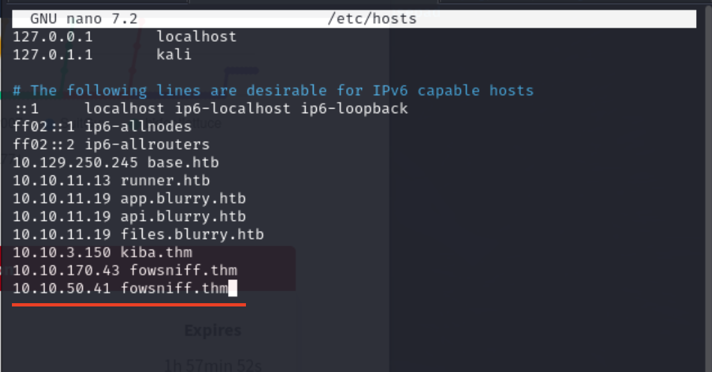
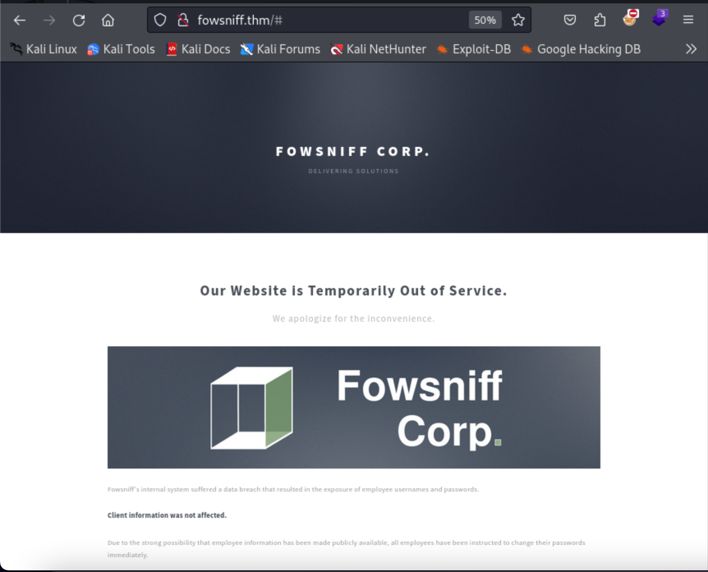
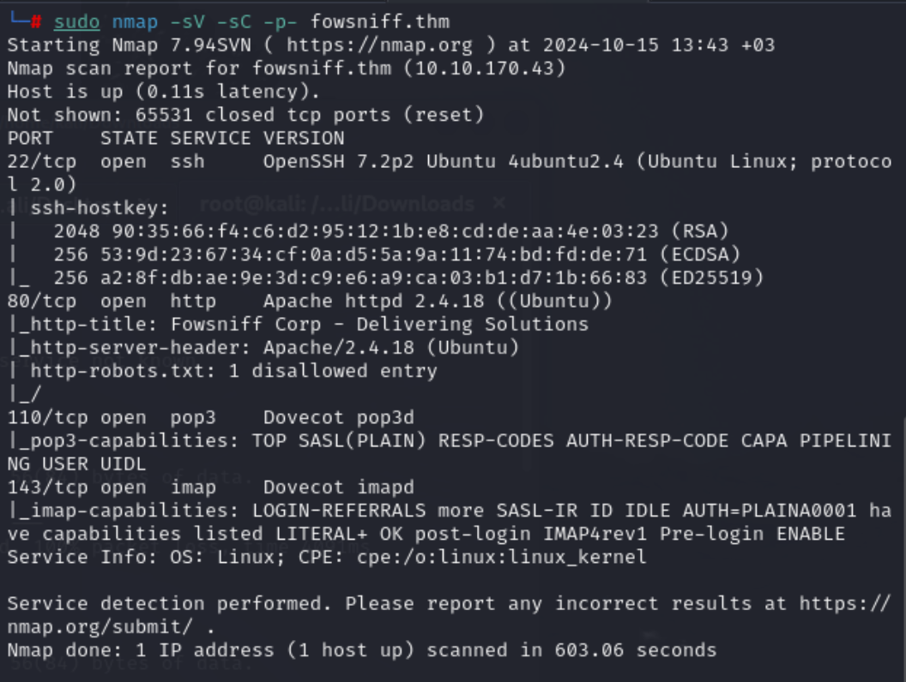

Hi everyone, today I would like to analyze the CTF challenge called Fowsniff from TryHackMe platform. Before I begin, I want to include my ipv4 address to /etc/hosts file to make more accessible the way we are reaching the host.

Let me check the port 80 and 443 to understand whether we have active web application or not through the browser.

After I viewed page source, I understood that there were not any suspicious code segment on html or js.
I initially conducted fuzzing ,but I could not reach useful paths. The room recommended us to make manual OSINT. You can reach out what I have accessed below:
On GitHub I retrieved a couple of mail accounts regarding to our machine. Let me also conduct port scan via network mapper.
I did not create advanced payload for port scanning since I knew that I was dealing with CTF machine. That's why, service, default script and full port scan(because I could not reach any endpoints) options are enough to handle the machine.
Payload:
sudo nmap -sV -sC -p- fowsniff.thm

As far as I know from computer networks course, IMAP stores emails through storage ,but pop3 firstly downloads emails temporarily then make readable for client.